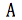
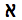
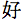
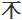
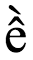
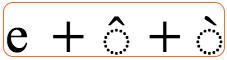

本文介绍理解其他与字符和字符编码相关的文章所必需的一些基本概念。
Unicode 是一个通用字符集，在一个标准中定义了在计算机上表示绝大多数现存语言所需的全部字符。Unicode旨在成为并且在很大程度上已经成为所有其他已编码字符集的超集。
计算机和Web上的文本由字符组成。字符包括字母、标点符号、其他符号等。
过去，不同的组织会收集不同的字符集合，并为其创建编码。一个集合可能只覆盖基于拉丁字母的西欧语言（不包括例如保加利亚或希腊等欧盟国家），另一个集合可能覆盖特定的远东语言（如日语），还有一些集合则只是为表示世界上某种语言而临时制定的众多方案之一。
不过，你无法保证自己的应用支持所有编码，也无法保证某种编码能够满足你表示某种语言的全部需求。此外，一般我们无法在同一个网页或数据库中混用不同编码，因此使用过去的编码方式很难支持多语言页面。
Unicode联盟提供了一个庞大而统一的字符集，旨在收录世界上所有书写系统所需的所有字符，包括古代文字（如楔形文字、哥特字母和圣书体）。Unicode如今是Web和操作系统架构的基础，并得到所有主要浏览器和应用的支持。Unicode标准还描述了处理字符需要的属性和算法。
这种方式让处理多语言页面或系统变得更轻松，也比大多数传统编码系统更能满足你的需求。
下面的图展示了Unicode 5.2版本中的文字区块：
Unicode字符集中的前65536个码位位置构成了基本多文种平面（BMP）。BMP 包含了大多数常用字符。
65,536 等于 2 的 16 次方，即两个字节所能表达的最大位排列组合数。
Unicode字符集还为大约一百万个其他码位预留了空间。这个范围内的字符被称为补充字符。
如需了解Unicode的更多信息，请访问Unicode主页，或阅读教程书写系统与Unicode入门。
明确区分字符集与字符编码这两个概念非常重要。
字符集由为特定目的可能会使用的一组字符组成——无论是为了在计算机中支持西欧语言，还是一个中国小学生三年级时在学校学习的汉字（与计算机无关）。
编码字符集是一组字符，每个字符都被分配了唯一的编号。编码字符集的单位称为码位。码位值表示字符在编码字符集中的位置。例如，在Unicode编码字符集中，字母 á 的码位为十进制的 225，或十六进制表示的 0xE1。（请注意，引用码位时通常使用十六进制表示，本文也将采用这种方式。）Unicode 码位的取值范围从 0x0000 到 0x10FFFF。
编码字符集有时也被称为代码页。
字符编码描述了编码字符集如何映射为计算机内存中的字节。在下图中，你可以看到在提非纳（柏柏尔语）文字中，字符和码位如何使用UTF-8 编码映射到内存中的字节序列（我们会在本节说明它）。图中的每个字形（也就是视觉表现形式）的下方列出了这个字符的码位。箭头指示这些字符是如何映射到字节序列的，每个字节都用两位十六进制数字表示。请注意，一个提非纳字符映射为三个字节，而一个感叹号只映射为一个字节。
以上解释略去了编码术语的一些细节，请参阅Unicode技术报告#17获取更多信息。
同一字符集，可有多种编码方式。 许多字符编码标准（如ISO 8859系列）对一个字符只使用一个字节，编码直接映射到该字符在编码字符集中的序号。例如，在ISO 8859-1编码字符集中，字母A位于第65个（从零开始计数），在计算机中以值为65的字节表示。对于ISO 8859-1，这一映射永远不会改变。
不过，在Unicode中情况就没有这么简单了。虽然在Unicode编码字符集中，字母 á 的码位始终是（十进制的）225，但在UTF-8中它由两个字节表示。换句话说，该字符在编码字符集中的取值与在这种编码方式下的字节值之间并非简单的一一对应关系。
此外，在Unicode中，同一个字符可以采用多种编码方式。例如，字母 á 在一种编码形式中可以用两个字节表示，在另一种编码形式中则需要四个字节。Unicode可使用的编码形式包括UTF-8、UTF-16和UTF-32。
UTF-8对ASCII中的字符使用1个字节，对几个其他的字母区块使用2个字节，对BMP中的其他字符使用3个字节。补充字符使用4个字节。
UTF-16对BMP中的任意字符使用2个字节，对补充字符使用4个字节。
UTF-32对所有字符都使用4个字节。
在下表中，第一行数字表示字符在Unicode编码字符集中的位置，其余各行展示了在特定字符编码中用于表示该字符的字节值。
 |
 |
 |
 |
|
|---|---|---|---|---|
| 码位 | U+0041 | U+05D0 | U+597D | U+233B4 |
| UTF-8 | 41 | D7 90 | E5 A5 BD | F0 A3 8E B4 |
| UTF-16 | 00 41 | 05 D0 | 59 7D | D8 4C DF B4 |
| UTF-32 | 00 00 00 41 | 00 00 05 D0 | 00 00 59 7D | 00 02 33 B4 |
关于字符和编码的更多信息，请参阅字符集与编码入门，或阅读教程在HTML与CSS中处理字符编码以及文章选择与应用字符编码。
对于XML和HTML（从4.0版开始），文档字符集被定义为由ISO/IEC 10646和Unicode标准共同定义的通用字符集（UCS）。（为简洁起见，并遵循常见做法，本文将UCS简称为Unicode。）
这意味着XML和HTML处理的逻辑模型是以Unicode所定义的字符集为基础的。（在实际操作中，这意味着浏览器通常会将所有文本在内部转换为Unicode。）
注意，这并不意味着所有HTML和XML文档都必须使用Unicode编码，不过这意味着文档只能包含Unicode定义的字符。只要正确声明，并且所代表的字符集是Unicode的子集，你的文档就可以使用任何编码。
关于文档字符集的更多信息，请参阅文章文档字符集。
虽然在本文迄今为止的叙述中我们并未对“字符”一词作严格限定，但在这里它被用来表示书面语言中具有语义价值的最小组成部分。然而，“字符”一词在不同语境中常常表达不同的含义：在某些情况下它可能指视觉表现形式，在另一些情况下指逻辑或字节级表示。因此，在指定算法、协议或文档格式时，如果不对其含义加以明确说明，这个词就过于含糊。如果在这些技术语境中使用“字符”一词，建议将其视为与上文所述“码位”的同义词。
尤其要记住，在Unicode中字节值与字符几乎不会一一对应，这一点在前面的示例中已说明。
不过，尤其是在复杂文字中，用户认为的最小字母单位（我们称之为用户感知字符）可能实际上是一个码位序列。例如，越南语字母 ề 在用户看来是一个字母，即使其底层码位序列是 U+0065 LATIN SMALL LETTER E + U+0302 COMBINING CIRCUMFLEX ACCENT + U+0300 COMBINING GRAVE ACCENT。类似地，一位孟加拉语使用者会将 ksha（ক্ষ，由 U+0995 BENGALI LETTER KA + U+09CD BENGALI SIGN VIRAMA + U+09B7 BENGALI LETTER SS 组成）视为单个字母。
在许多场景中，考虑这些用户感知字符非常重要。例如，在进行换行、光标移动、选中或删除等编辑操作时，常常需要把某些码位的组合视作一个整体。如果用户在选中文本时不慎遗漏了上述字母的一部分，或者换行把基字符与其后续的组合字符拆开，往往会出现问题。
为了在此类操作中近似用户感知字符，Unicode 使用一组通用规则来定义grapheme cluster（字位丛）。grapheme cluster是一码位序列，应用可以将其视为一个整体。单个字母（如e）是一个grapheme cluster，而任何基字符与其后续组合字符的组合（例如前面提到的ề）也是一个grapheme cluster。
Unicode标准附录#29：文本分段上定义了两类grapheme cluster：extended grapheme cluster和legacy grapheme cluster。本文提到grapheme cluster时指的是前者，不建议使用后者。
| 用户感知字符 |  |
|---|---|
| （可能的）分解与grapheme cluster的边界 |  |
CSS 为了在特定语境中引用不可分割的文本单元，使用排版字符单元这一术语。排版字符单元的定义取决于所执行的操作。例如，对于前文提到的ề，向前删除时它算一个排版字符单元，但在回退删除时则算三个。排版字符单元也涵盖了如孟加拉文的ksha这种目前grapheme cluster的规则尚未覆盖的情况。至于在特定语言和上下文中何者构成排版字符单元，交由应用自行判断，而非由规则明确规定。
字体是字形的集合。在简单的场景下，字形就是码位的视觉表现。同一个码位使用不同字体，或字体加粗、倾斜等时，其字形会不同。对于表情符号（emoji）而言，不同平台呈现的字形也会不同。
实际上，一个码位可以对应多个字形，多个码位也可能对应一个字形。
表情符号是码位与字形之间复杂关系的另一个例子。
| U+1F46A FAMILY | |
| U+1F468 U+200D U+1F469 U+200D U+1F466 | |
| U+1F468 U+200D U+1F469 U+200D U+1F467 U+200D U+1F466 |
表示“家庭”的表情符号在Unicode中有一个码位：👪 [U+1F46A FAMILY]。它也可以通过码位序列来构造：👨👩👦 [U+1F468 U+200D U+1F469 U+200D U+1F466]。调整或添加其他表情符号就会改变该家庭的组合。例如，序列 👨👩👧👧 [U+1F468 U+200D U+1F469 U+200D U+1F467 U+200D U+1F466] 会在支持此类组合的系统中生成表示“家庭：男人、女人、女孩、男孩”的组合字形。许多常见表情符号只能由码位序列构成，但在显示或处理文本时仍应将其视作单个用户感知字符。
字符转义是一种不直接使用字符本身却仍表示该字符的方法。
例如，如果你的文档使用ISO 8859-1编码（覆盖西欧语言），就无法直接表示希伯来字符 א。在HTML中，可以通过转义序列 א 来表示该字符。由于文档字符集是Unicode，用户代理应该能够识别出这表示一个希伯来字母aleph。
有关HTML/XHTML和CSS中转义的示例，以及如何使用它们的建议，请参阅文章在标记与CSS中使用字符转义。
当你从服务器获取文档时，服务器通常会随文档一起发送一些附加信息，称为HTTP标头。下面是文档从服务器传到客户端时的HTTP标头示例。
示例中倒数第二行携带的是文档的字符编码信息。
HTTP/1.1 200 OK
Date: Wed, 05 Nov 2003 10:46:04 GMT
Server: Apache/1.3.28 (Unix) PHP/4.2.3
Content-Location: CSS2-REC.en.html
Vary: negotiate,accept-language,accept-charset
TCN: choice
P3P: policyref=http://www.w3.org/2001/05/P3P/p3p.xml
Cache-Control: max-age=21600
Expires: Wed, 05 Nov 2003 16:46:04 GMT
Last-Modified: Tue, 12 May 1998 22:18:49 GMT
ETag: "3558cac9;36f99e2b"
Accept-Ranges: bytes
Content-Length: 10734
Connection: close
Content-Type: text/html; charset=UTF-8
Content-Language: en
如果你的文档是通过脚本动态生成的，你可以显式地把这些信息添加到HTTP标头中。如果提供的是静态文件，服务器也可能会把这些信息与文件关联起来。以这种方式在服务器上设置字符编码信息的方法因服务器而异，需要与服务器管理员确认。
例如，Apache服务器通常会提供默认编码，并且通常可以通过目录级设置覆盖。网站管理员可以在.htaccess文件中添加以下代码，使当前目录及其子目录中所有.html文件都以UTF-8提供服务：
AddType 'text/html; charset=UTF-8' html关于在HTTP标头中更改编码的更多信息，请参阅设置HTTP charset参数。
刚刚入门？请参阅字符集与编码入门
网页制作
服务器配置